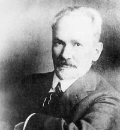

Обо мне.
Мне 19 лет, учусь на втором курсе ВМК МГУ, пытаюсь программировать, создаю всякие интересные проекты, веду всякие блоги в ВК.Иногда фотографирую, если вдруг появляется желание. Здесь есть немного фотографий. И здесь.
На этой странице вести личный блог пока не собираюсь, но кто знает. Пока что вот список мной администрируемых сообществ:
| Книги для программистов Несмотря на существование торрентов, у меня возникло желание предоставить пользователям скачивать книги напрямую, да еще и структурировать книги по тематике. |
|
| Pastebin (это так называется сообщество, не сайт :) ) Сюда выкладывают интересные проекты или код для многократного использования, в том числе и свой. |
|
|  | Василий Розанов Изредка выкладываю цитаты из творчества многими забытого философа. |